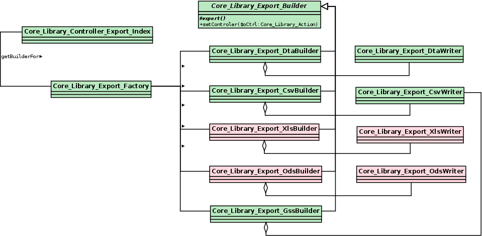
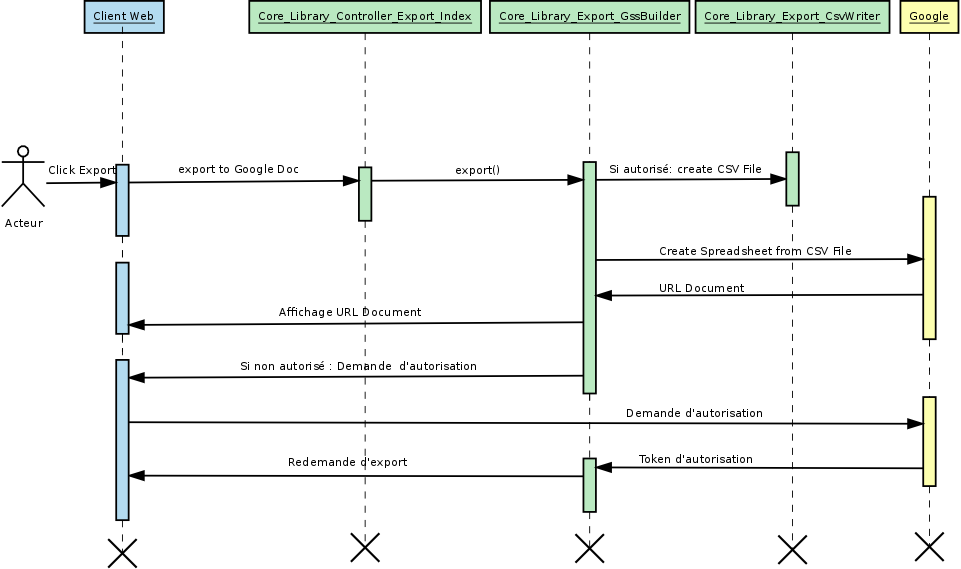

Export
Introduction
Le module d’export de données est géré par la classe Core_Library_Controller_Export_Index qui étend Core_Library_Controller_Action.
Le fait d’étendre Core_Library_Controller_Action permet l’utilisation des Hooks (points d’accès) similaire à ceux présent dans la frame.
La méthode buildAction de Core_Library_Controller_Action appelle statiquement la méthode Core_Library_Export_Factory::getBuilderFor($sFormat) qui renvoie une classe de build en fonction du format.
Architecture

Fonctionnement
Le module d’export fonctionne conjointement avec le WidgetActionExport. Pour rappel ce widget :
- Présente une liste de formats d’export
- Si besoin appelle une interface de paramétrage
- Exécute une requête XHR pour lancer la génération du fichier
- Propose à l’utilisateur de télécharger le fichier généré
- Optionnellement ordonne au serveur de supprimer le fichier généré si l’utilisateur ne le télécharge pas
Ces trois actions sont réparties comme suit :
- buildAction : En charge d’instancier et d’exécuter le builder associé au format
- downloadAction : En charge de lire le fichier temporaire demandé (paramètre) pour forcer le téléchargement
- rmfAction : En charge de supprimer le fichier (Remove File) temporaire généré si jamais l’utilisateur ferme la fenêtre Yui sans télécharger le fichier
Point d’accès disponibles
Méthode buildAction
- Cette méthode se charge d’appeler le bon builder puis appelle les methodes :
- setControler
- setFilterData
- init
- export
Création d’un document Google Spreadsheet
